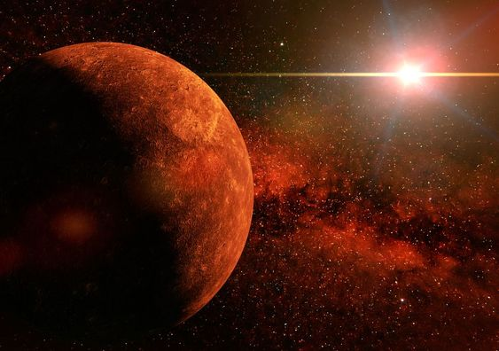
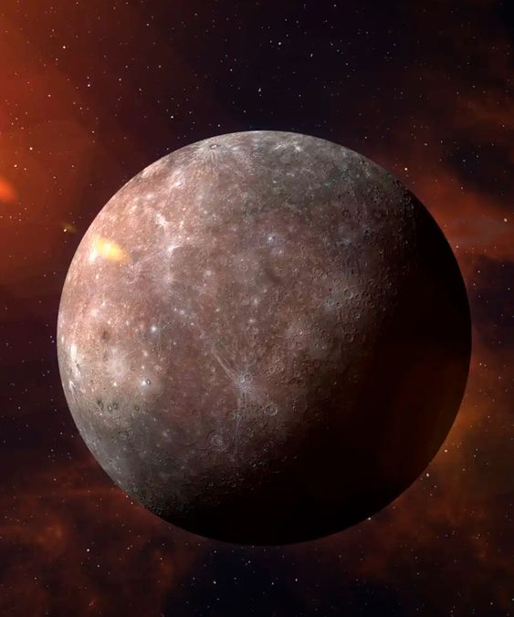
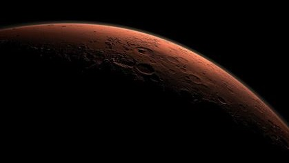

El sistema solar está compuesto por ocho planetas, cada uno de ellos con particularidades en cuanto a su composición y características. Entre ellos, el más pequeño es Mercurio que es solo un poco más grande que la luna de la Tierra, informa la NASA.
- ciencia
- animales
- medio ambiene
- historia
- viajes
5 Curiosidades sobre Mercuirio
Además de ser el más pequeño, el planeta más cercano al Sol cuenta con otros datos destacados que lo hacen único:
1. Mercurio es el más cercano al Sol, pero no es el planeta más caliente
Si bien la radiación solar, las temperaturas extremas y la proximidad de Mercurio al Sol podrían hacer pensar que este es el más caliente, no es así, hay otro cuerpo celeste que lo supera. Gracias a su densa atmósfera, Venus es considerado el planeta más caliente del sistema solar.
2. La amplitud térmica es importante en Mercurio
Debido a que este planeta está tan cerca del Sol, las temperaturas diurnas pueden alcanzar máximas de 430 grados centígrados. Sin embargo carece de una atmósfera que retenga ese calor durante la noche, por lo que en ese momento del día las temperaturas pueden descender hasta los -180 grados centígrados.
3. Mercurio es el planeta más veloz del sistema solar
Según informa la NASA en su sitio web, Mercurio viaja por el espacio a casi 47 kilómetros por segundo. A su vez, como consecuencia de que es el más cercano al Sol, tiene el año más corto de todos los planetas: tarda 88 días en dar una vuelta completa alrededor de la gran estrella.
4. Años cortos, días largos en Mercurio
Si bien en comparación con la Tierra tiene un año corto, las jornadas son realmente largas en Mercurio. Un día en ese planeta, es decir, una rotación completa sobre su eje, demora 59 días terrestres. Sin embargo, cada rotación no va acompañada de la salida y la puesta del sol, sino que un día solar (un ciclo completo de dia y noche) equivale a 176 días terrestres. Es decir que en Mercurio amanece cada dos años terrestres.
5. Mercurio sin estaciones
Este planeta gira casi perfectamente en posición vertical dado que su eje de rotación está inclinado apenas dos grados con respecto al plano de su órbita alrededor del Sol. En consecuencia, Mercurio no experimenta estaciones.
